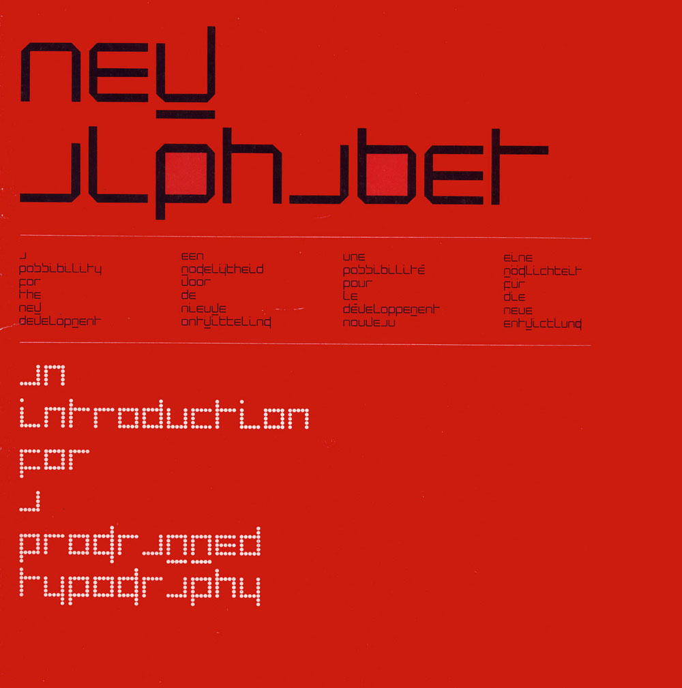
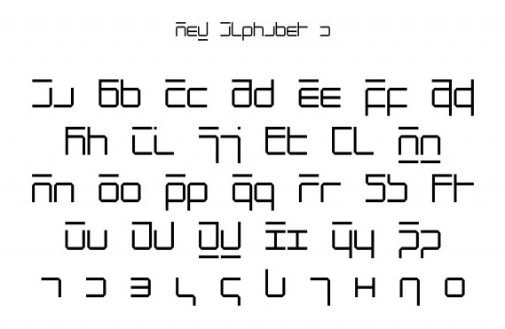

Home
SF MOMA
New Alphabet
Designed by Wim Crouwel in 1967
About New Alphabet
In the infancy of digital typography as lead type, set by hand in heavy lead blocks or by machines that generated lines of metal type, was giving way to text set on screens Crouwel saw an opportunity for an interesting experiment. Early computer screenscathode ray tube CRT monitors rendered images in fairly large pixels, making traditional curvilinear letterforms difficult to reconstruct, and so Crouwel set out to redesign the alphabet using only horizontal lines. New Alphabet is, in Crouwel's words, over the top and never meant to be really used, a statement on the impact of new technologies on centuries of typographic tradition. In 1988, however, Peter Saville Associates used a stylized version of the font on the cover of Substance, an album for the band Joy Division. New Alphabet was digitized for contemporary use in 1997 by Freda Sack and David Quay of The Foundry, closely based on Crouwel's original studies.
OCR A 60pt
The quick brown fox jumps over the lazy dog
OCR A 45pt
The quick brown fox jumps over the lazy dog
OCR A 24pt
The quick brown fox jumps over the lazy dog
OCR A 14pt
The quick brown fox jumps over the lazy dog
OCR A 9pt
The quick brown fox jumps over the lazy dog

